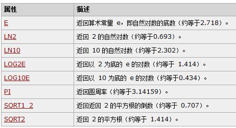
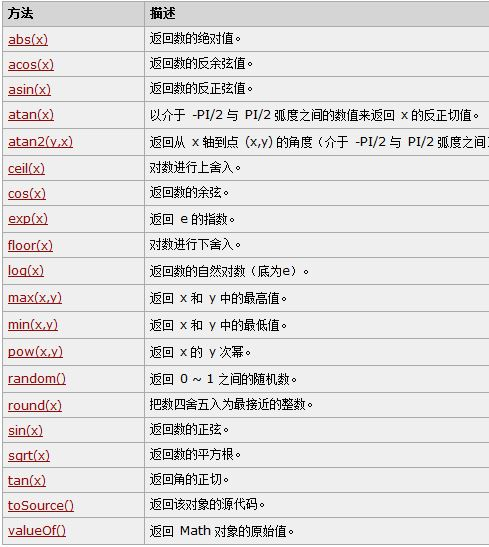

Math对象用于执行数学任务
使用Math的属性和方法的语法：
var pi_value = Math.PI;
var sqrt_value = Math.sqrt(15);
Math对象并不像Date和String那样是对象的类，因此没有构造函数Math()，像Math.sin()这样的函数只是函数，不是某个对象的方法，无需创建，通过Math作为对象使用就可以调用其所有属性的方法。
 var number = 3.14;
var result = Math.floor(number);//向下取整;Math.ceil(number);//向上取整;Math.random()//随机数;Math.floor(Math.random()*9+8);//乘以就是0-9的随机数，加8是把数值增加了8-16的9位随机数。